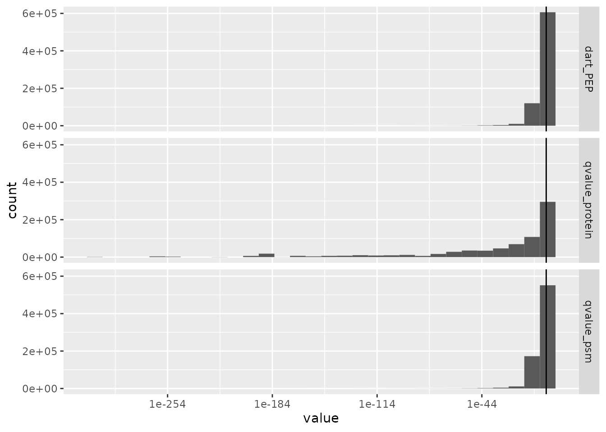

Reproduction of the SCoPE2 analysis (Specht et al. 2021)
Christophe Vanderaa1, Computational Biology, UCLouvain
Laurent Gatto, Computational Biology, UCLouvain
1 Oktober 2021
SCoPE2.RmdAbstract
Recent advances in sample preparation, processing and mass spectrometry (MS) have allowed the emergence of MS-based single-cell proteomics (SCP). This vignette presents a robust and standardized workflow to reproduce the data analysis of SCoPE2, one of the pioneering works in the field developed by the Slavov Lab. The implementation uses well-defined Bioconductor classes that provide powerful tools for single-cell RNA sequencing and for shotgun proteomics. We demonstrate that our pipeline can reproduce the SCoPE2 analysis using only a few lines of code.Introduction
SCoPE2 (Specht et al. (2021)) is the first mass spectrometry (MS)-based single cell proteomics (SCP) protocol that has been used to profile thousands of proteins in thousands of single-cells. This is a technical milestone for SCP and it opens the door for fine-grain understanding of biological processes within and between cells at the protein level. The emergence of SCP data leads to the need of new computational developments that can deal with the specificities and challenges of this new type of data.
Although the authors provided all code and data required for fully reproducing their analysis, the code is difficult to read, implements many functions from scratch, and is based on generic table formats not suited for easy SCP data manipulation. This makes their workflow difficult to re-use for other analyses. Our goal is to bridge the gap between data acquisition and data interpretation by providing a new computational framework that is tailored for MS-SCP data. The SCoPE2 dataset is an ideal dataset to showcase the application of our standardized software solution.
Let's first load the replication package to make use of some helper functions. Those functions are only meant for this reproduction vignette and are not designed for general use.
library("SCP.replication")
scp and the SCoPE2 workflow
The SCoPE2 code provided along with the article can be retrieved from this GitHub repository. Note that we here used the part of the script that performs the stringent feature selection (see the original paper for more details). The objective of this vignette is to replicate the SCoPE2 script while providing standardized, easy-to-read, and well documented code. Therefore, our first contribution was to formalize the SCoPE2 script into a conceptual flow chart.

Overview of the SCoPE2 workflow.
Blue boxes highlight steps that are already routinely performed in bulk proteomics. The orange boxes depict the steps that are specific to single-cell applications and require new implementations. We have developed a new data framework dedicated to SCP data analysis that combines two existing Bioconductor classes. The SingleCellExperiment class provides an interface to many cutting edge methods for single-cell analysis and the QFeatures class facilitates manipulation and processing of MS-based quantitative data (blue boxes in the flowchart). The scp vignette provides detailed information about the data structure. The scp package extends the functionality of QFeatures for single-cell application. scp offers a standardized implementation of the single-cell steps in the flowchart above (orange boxes).
The required packages for running this workflow are listed below.
scpdata and the SCoPE2 dataset
We also implemented a data package called scpdata. It distributes published MS-SCP datasets, such as the SCoPE2 dataset. The datasets were downloaded from the data source provided in the publication and formatted to a QFeatures object so that it is compatible with our software. The underlying data storage is based on the ExperimentHub package that provides a cloud-based storage infrastructure.
The SCoPE2 dataset (Specht et al. (2021)) is provided at different levels of processing:
- The raw data files that were generated by the mass-spectrometer software.
- A PSM data table obtained from the MaxQuant software that performs spectrum identification and quantification. PSM stands for peptide to spectrum match and refers to a MS spectrum that could successfully be assigned to a peptide sequence. The provided PSM table was further processed using DART-ID (Chen, Franks, and Slavov (2019)) to improve the identification rate.
- A peptide data table obtained from the SCoPE2 analysis script. This is the data after the running the last step of the pipeline at peptide level.
- A protein data table obtained as the final table from the SCoPE2 analysis script. This is the data after the running the last step of the pipeline at protein level.
The workflow starts with the PSM table and will generate the peptide and the protein data. The authors provided the PSM dataset as a data table (data.frame) in the R data environment called raw.RData. Peptide and protein data are shared as CSV files. We highly value the effort the authors of SCoPE2 have made to publicly share all the data generated in their project, from raw files to final expression tables (see the Slavov Lab website).
We formatted the SCoPE2 dataset following our data framework. The formatted data can be retrieved from the scpdata package using the specht2019v3() function. All datasets in scpdata are called after the first author and the date of publication (the preprint and data were first published in 2019). v3 stands for the third version of the data that was released in October 2020.
scp <- specht2019v3()## see ?scpdata and browseVignettes('scpdata') for documentation## loading from cacheThe data contain 179 different SingleCellExperiment objects that we refer to as assays. Each assay contains expression data along with feature metadata. Each row in an assay represents a feature that can either be a PSM, a peptide or a protein depending on the assay. Each column in an assay represents a sample. In the SCoPE2 data, samples are acquired as a TMT channel because several sample are multiplexed in a single MS run, hence each assay contains multiple columns. Most samples are single-cells, but some samples are blanks, references, carriers, ... (see later). Below, we show the overview of the scp dataset.
scp## An instance of class QFeatures containing 179 assays:
## [1] 190222S_LCA9_X_FP94AA: SingleCellExperiment with 2777 rows and 11 columns
## [2] 190222S_LCA9_X_FP94AB: SingleCellExperiment with 4348 rows and 11 columns
## [3] 190222S_LCA9_X_FP94AC: SingleCellExperiment with 4917 rows and 11 columns
## ...
## [177] 191110S_LCB7_X_APNOV16plex2_Set_9: SingleCellExperiment with 4934 rows and 16 columns
## [178] peptides: SingleCellExperiment with 9354 rows and 1490 columns
## [179] proteins: SingleCellExperiment with 3042 rows and 1490 columns177 out of the 179 assays are PSM data, each assay corresponding to a separate MS run. 63 contain 11 columns and 114 contain 16 columns. This is because the SCoPE2 protocol first included TMT-11 multiplexing, but soon the TMT-16 multiplexing was released and the authors decided to switch to the latter to increase the throughput of the technique. Notice that the assays were also acquired in 4 chromatographic batches. Here is an overview of the distribution of the assays across the TMT and chromatographic batches.

The dataset also contains a peptides assay and a proteins assay that hold peptide and protein level information, respectively. Those were provided by the authors. The objective of this vignette is to produce the peptides and proteins assays from the 177 PSM assays following the same procedure as the SCoPE2 script but using standardized functionalities.
We extract the peptides and proteins assays and keep them for later benchmarking. Using double brackets [[...]] extracts the desired assay as a SingleCellExperiment object. On the other hand, using simple brackets [row, col, assay] subsets the desired elements/assays but preserves the QFeatures data structure.
peptides_SCoPE2 <- scp[["peptides"]]
proteins_SCoPE2 <- scp[["proteins"]]
scp <- scp[, , -(178:179)]## Warning: 'experiments' dropped; see 'metadata'## harmonizing input:
## removing 2980 sampleMap rows not in names(experiments)To avoid naming confusions during later benchmarking of the replication, we name the peptide and protein data sets generated by the SCoPE2 script peptides_SCoPE2 and proteins_SCoPE2, respectively.
Filter the PSM data
After importing the data, the SCoPE2 analysis filters low-confidence PSMs. Each PSM assay contains feature meta-information that are stored in the assay rowData. The QFeatures package allows to quickly filter the rows of an assay by using these information. The available variables in the rowData are listed below for each assay.
rowDataNames(scp)## CharacterList of length 177
## [["190222S_LCA9_X_FP94AA"]] uid Sequence Length ... digest modseq peptide
## [["190222S_LCA9_X_FP94AB"]] uid Sequence Length ... digest modseq peptide
## [["190222S_LCA9_X_FP94AC"]] uid Sequence Length ... digest modseq peptide
## [["190222S_LCA9_X_FP94AD"]] uid Sequence Length ... digest modseq peptide
## [["190222S_LCA9_X_FP94AE"]] uid Sequence Length ... digest modseq peptide
## [["190222S_LCA9_X_FP94AF"]] uid Sequence Length ... digest modseq peptide
## [["190222S_LCA9_X_FP94AG"]] uid Sequence Length ... digest modseq peptide
## [["190222S_LCA9_X_FP94AH"]] uid Sequence Length ... digest modseq peptide
## [["190222S_LCA9_X_FP94AI"]] uid Sequence Length ... digest modseq peptide
## [["190222S_LCA9_X_FP94AJ"]] uid Sequence Length ... digest modseq peptide
## ...
## <167 more elements>Filter out failed runs based on PSM content
First, only the assays that have sufficient PSMs are kept. The authors keep an assay if it has over 500 PSMs. Before filtering, let's first look at the distribution of the number of PSMs per assay. Note that we can easily extract the number of rows (here PSMs) and the number of columns (TMT channels) of each assay using the dims function implemented in QFeatures.
nPSMs <- dims(scp)[1, ]Let's have a look at the number of features that were identified in the different runs.
ggplot(data.frame(nPSMs)) +
aes(x = nPSMs) +
geom_histogram() +
geom_vline(xintercept = 500)
4 assays have very few number of PSMs, probably because those runs failed. They are hence below the threshold of 500 and are removed from the analysis. To perform this, we take advantage of the subsetting method of a QFeatures object. It can be seen as a three-order array: \(features \times samples \times assay\). Hence, QFeatures supports three-order subsetting x[rows, columns, assays].
scp <- scp[, , nPSMs > 500]## Warning: 'experiments' dropped; see 'metadata'## harmonizing input:
## removing 59 sampleMap rows not in names(experiments)
## removing 59 colData rownames not in sampleMap 'primary'You may notice that a warning is thrown when performing the subsetting step. This is because, as we expected, a few assays were dropped. Removed assays are listed in the metadata slot:
metadata(scp)## $drops.experiments
## [1] "peptides" "proteins"
## [3] "190222S_LCA9_X_FP94BD" "191026S_LCB7_X_AP16plex_Set_15"
## [5] "191108S_LCB7_X_APNOV16plex_Set_24" "191108S_LCB7_X_APNOV16plex_Set_29"Filter out PSMs with high false discovery rate
Next, SCoPE2 filters PSMs based on the false discovery rate (FDR) for identification. The PSM data were already processed with DART-ID (Chen, Franks, and Slavov (2019)), a python software that updates the confidence in peptide identification using an Bayesian inference approach. DART-ID outputs for every PSM the updated posterior error probability (PEP). Filtering on the PEP is too conservative and it is rather advised to filter based on FDR (Käll et al. (2008)). To control for the FDR, we need to compute q-values, that correspond to the minimal FDR threshold that would still select the associated feature.
We can use the pep2qvalue function to easily compute q-values from the PEPs computed by MaxQuant or updated by DART-ID. In the SCoPE2 workflow, the features are selected based on the FDR at PSM level and at protein level. The DART-ID PEPs (dart_PEP) as well as the protein information (protein) are automatically retrieved from the rowData of each assay. The function will store the computed q-values back in the rowData. It will be stored under qvalue_psm and qvalue_protein for the PSM and proteins q-values, respectively.
scp <- pep2qvalue(scp,
i = names(scp),
PEP = "dart_PEP",
rowDataName = "qvalue_psm")
scp <- pep2qvalue(scp,
i = names(scp),
groupBy = "protein",
PEP = "dart_PEP",
rowDataName = "qvalue_protein")We can extract the q-values from the rowData of several assays using the rbindRowData function. It takes the rowData of interest and returns a single DataFrame table with variables of interest. We plot the q-values along with the DART-ID PEPs using ggplot2 facets.
rbindRowData(scp, i = names(scp)) %>%
data.frame %>%
pivot_longer(cols = c("dart_PEP", "qvalue_psm", "qvalue_protein"),
names_to = "measure") %>%
ggplot(aes(x = value)) +
geom_histogram() +
geom_vline(xintercept = 0.1) +
scale_x_log10() +
facet_grid(rows = vars(measure))## Warning: Transformation introduced infinite values in continuous x-axis## Warning: Removed 6690 rows containing non-finite values (stat_bin).
We filter the PSMs to control for a 1% PSM and protein FDR. We can perform this on our QFeatures object by using the filterFeatures function. The q-values are directly accessed from the rowData of each assay.
scp <- filterFeatures(scp,
~ qvalue_psm < 0.01 & qvalue_protein < 0.01)Filter out contaminants
We will now remove PSMs that were matched to contaminant proteins (the protein name starts with CON) or to the decoy database (the protein name starts with REV). Again, filterFeatures can directly access the protein names from the rowData.
scp <- filterFeatures(scp,
~ !grepl("REV|CON", protein))Filter out noisy spectra
A PIF (parental ion fraction) smaller than 80 % indicates the associated spectra is contaminated by co-isolated peptides and therefore the quantification becomes unreliable. The PIF was computed by MaxQuant and is readily available for filtering.
scp <- filterFeatures(scp,
~ !is.na(PIF) & PIF > 0.8)Filter out PSMs with high sample to carrier ratio
The PSMs are next filtered based on the sample to carrier ratio (SCR), that is the TMT ion intensity of a single-cell sample divided by the TMT ion intensity of the carrier (200 cells) acquired during the same run as the sample. It is expected that the carrier intensities are much higher than the single-cell intensities. We implemented the computeSCR function that computes the SCR for each PSM averaged over all samples of interest in a given assay. A PSM is removed when the mean SCR exceeds 10 %. To perform this, we need to tell the function which columns are the samples of interest and which column is the carrier. The colData of the QFeatures object is used to define this.
table(scp$SampleType)##
## Blank Carrier Macrophage Monocyte Reference Unused
## 168 173 1198 462 173 284In this dataset, SampleType gives the type of sample that is present in each TMT channel. The SCoPE2 protocol includes 5 types of samples:
- The carrier channels (
Carrier) contain 200 cell equivalents and are meant to boost the peptide identification rate. - The normalization channels (
Reference) contain 5 cell equivalents and are used to partially correct for between-run variation. - The unused channels (
Unused) are channels that are left empty due to isotopic cross-contamination by the carrier channel. - The blank channels (
Blank) contain samples that do not contain any cell but are processed as single-cell samples. - The single-cell sample channels contain the single-cell samples of interest (
MacrophageorMonocyte).
The computeSCR function expects the user to provide a pattern (following regular expression syntax) that uniquely identifies a carrier channel in each run and the samples or blanks. The function will store the mean SCR of each feature in the rowData of each assay.
scp <- computeSCR(scp,
i = names(scp),
colvar = "SampleType",
carrierPattern = "Carrier",
samplePattern = 4:16,
rowDataName = "MeanSCR")## Warning in computeSCR(scp, i = names(scp), colvar = "SampleType", carrierPattern
## = "Carrier", : The pattern is numeric. This is only allowed for replicating the
## SCoPE2 analysis and will later get defunct.In this step, we supplied numeric entries as samplePattern instead of a regular expression pattern. This is to replicate the SCoPE2 analysis. We refrain from using a numeric pattern (as indicated by the warning above) because this can lead to unnoticed artefacts. In fact, the empty channels of the TMT-16 runs but not TMT-11 channels are here also used to compute the average SCR which could have been avoided when using a character pattern.
Before applying the filter, we plot the distribution of the mean SCR.
rbindRowData(scp, i = names(scp)) %>%
data.frame %>%
ggplot(aes(x = MeanSCR)) +
geom_histogram() +
geom_vline(xintercept = c(1/200, 0.1),
lty = 2:1) +
scale_x_log10()A great majority of the PSMs have a mean SCR that is lower than 10%, as expected. Interestingly, the mode of the distribution is located close to 1%. This is expected since every sample channel contains a single-cell and the carrier contains 200 cells leading to an expected ratio of 0.5% (dashed line). We remove the PSMs for which the mean SCR exceeds the 10% threshold.
scp <- filterFeatures(scp,
~ !is.na(MeanSCR) &
!is.infinite(MeanSCR) &
MeanSCR < 0.1)Normalize to reference
In order to partially correct for between-run variation, SCoPE2 computes relative reporter ion intensities. This means that intensities measured for single-cells are divided by the reference channel (5-cell equivalents). We use the divideByReference function that divides channels of interest by the reference channel. Similarly to computeSCR, we can point to the samples and the reference columns in each assay using the annotation contained in the colData. We will here divide all columns (using the regular expression wildcard .) by the reference channel (Reference). Notice that when taking all samples we also include the reference channel itself. Hence, from now on, the reference channels will contain only ones.
scp <- divideByReference(scp,
i = names(scp),
colvar = "SampleType",
samplePattern = ".",
refPattern = "Reference")Aggregate PSM data to peptide data
Now that the PSM assays are processed, we can aggregate them to peptides. This is performed using the aggregateFeaturesOverAssays function. This is a wrapper function in scp that sequentially calls the aggregateFeatures from the QFeatures package over the different assays. For each assay, the function aggregates several PSMs into a unique peptide given an aggregating variable in the rowData (peptide sequence) and a user-supplied aggregating function (the median for instance). Regarding the aggregating function, the SCoPE2 analysis removes duplicated peptide sequences per run by taking the first non-missing value. While better alternatives are documented in QFeatures::aggregateFeatures, we still use this approach for the sake of replication and for illustrating that custom functions can be applied.
The aggregated peptide assays must be given a name. We here used the original names with peptides_ at the start.
We now have all the required information to aggregate the PSMs in the different batches to peptides.
scp <- aggregateFeaturesOverAssays(scp,
i = names(scp),
fcol = "peptide",
name = peptideAssays,
fun = remove.duplicates)Under the hood, the QFeatures architecture preserves the relationship between the aggregated assays. See ?AssayLinks for more information on relationships between assays. Notice that aggregateFeaturesOverAssays created as many new assays as the number of supplied assays.
scp## An instance of class QFeatures containing 346 assays:
## [1] 190222S_LCA9_X_FP94AA: SingleCellExperiment with 1098 rows and 11 columns
## [2] 190222S_LCA9_X_FP94AB: SingleCellExperiment with 2420 rows and 11 columns
## [3] 190222S_LCA9_X_FP94AC: SingleCellExperiment with 2775 rows and 11 columns
## ...
## [344] peptides_191110S_LCB7_X_APNOV16plex2_Set_7: SingleCellExperiment with 2379 rows and 16 columns
## [345] peptides_191110S_LCB7_X_APNOV16plex2_Set_8: SingleCellExperiment with 2480 rows and 16 columns
## [346] peptides_191110S_LCB7_X_APNOV16plex2_Set_9: SingleCellExperiment with 2308 rows and 16 columnsJoin the SCoPE2 sets in one assay
Up to now, we kept the data belonging to each MS run in separate assays. We now combine all batches into a single assay. This can easily be done using the joinAssays function from the QFeatures package.
Consensus mapping of peptides to proteins
We need to account for an issue in the data. joinAssays will only keep the metadata variables that have the same value between matching rows. However, some peptide sequences map to one protein in one run and to another protein in another run. Hence, the protein sequence is not constant for all peptides and is removed during joining. It is important we keep the protein sequence in the rowData since we will later need it to aggregate peptides to proteins. To avoid this issue, we replace the problematic peptides to protein mappings through a majority vote.
rbindRowData(scp, i = names(scp)[1:173]) %>%
data.frame %>%
group_by(peptide) %>%
## The majority vote happens here
mutate(protein = names(sort(table(protein),
decreasing = TRUE))[1]) %>%
select(peptide, protein) %>%
filter(!duplicated(peptide, protein)) ->
ppMap
consensus <- lapply(peptideAssays, function(i) {
ind <- match(rowData(scp[[i]])$peptide, ppMap$peptide)
DataFrame(protein = ppMap$protein[ind])
})
names(consensus) <- peptideAssays
rowData(scp) <- consensusThis code chunk is hard to read, but this issue should represent a special case and we therefore don't consider this step worth standardizing. Some peptides are mapped to different proteins because the TMT-11 and TMT-16 data sets were analysed separately in MaxQuant. Razor peptides, i.e. peptides that are found in several protein groups, are assigned to the protein group with most peptides (Tyanova, Temu, and Cox (2016),) and this can vary from one analysis to another. Therefore, inconsistent peptide mapping should not occur when all runs are preprocessed at once. We will see later that this issue does not impair the replication of the SCoPE2 analysis, but it recalls that mapping of shared peptides to proteins is not a trivial task.
Cleaning missing data
Another important step before we join the assays is to replace zero and infinite values by NAs. The zeros can be biological zeros or technical zeros and differentiating between the two types is a difficult task, they are therefore better considered as missing. The infinite values arose during the normalization by the reference because the channel values are divide by a zero from the reference channel. This artefact could easily be avoided if we had replace the zeros by NAs at the beginning of the workflow, what we strongly recommend for future analyses.
The infIsNA and the zeroIsNA functions automatically detect infinite and zero values, respectively, and replace them with NAs. Those two functions are provided by the QFeatures package.
Join assays
Now that the peptides are correctly matched to proteins and missing values are correctly formatted, we can join the assays.
scp <- joinAssays(scp,
i = peptideAssays,
name = "peptides")joinAssays has created a new assay called peptides that combines the previously aggregated peptide assays.
scp## An instance of class QFeatures containing 347 assays:
## [1] 190222S_LCA9_X_FP94AA: SingleCellExperiment with 1098 rows and 11 columns
## [2] 190222S_LCA9_X_FP94AB: SingleCellExperiment with 2420 rows and 11 columns
## [3] 190222S_LCA9_X_FP94AC: SingleCellExperiment with 2775 rows and 11 columns
## ...
## [345] peptides_191110S_LCB7_X_APNOV16plex2_Set_8: SingleCellExperiment with 2480 rows and 16 columns
## [346] peptides_191110S_LCB7_X_APNOV16plex2_Set_9: SingleCellExperiment with 2308 rows and 16 columns
## [347] peptides: SingleCellExperiment with 15675 rows and 2458 columnsFilter single-cells based on median CV
The SCoPE2 script proceeds with filtering the single-cells. The filtering is mainly based on the median coefficient of variation (CV) per cell. The median CV measures the consistency of quantification for a group of peptides that belong to a protein. We remove cells that exhibit high median CV over the different proteins. We compute the median CV per cell using the medianCVperCell function from the scp package. The function takes the protein information from the rowData of the assays that will tell how to group the features (peptides) when computing the CV. Note that we supply the peptide assays before joining in a single assays (i = peptideAssays). This is because SCoPE2 performs a custom normalization (norm = "SCoPE2"). Each row in an assay is normalized by a scaling factor. This scaling factor is the row mean after dividing the columns by the median. The authors retained CVs that are computed using at least 6 peptides (nobs = 6). See the methods section in Specht et al. (2021) for more information.
scp <- medianCVperCell(scp,
i = peptideAssays,
groupBy = "protein",
nobs = 6,
na.rm = TRUE,
colDataName = "MedianCV",
norm = "SCoPE2")The computed CVs are stored in the colData. We can now filter cells that have reliable quantifications. The blank samples are not expected to have reliable quantifications and hence can be used to estimate a null distribution of the CV. This distribution helps defining a threshold that filters out single-cells that contain noisy quantification.
colData(scp) %>%
data.frame %>%
filter(SampleType %in% c("Macrophage", "Monocyte", "Blank")) %>%
ggplot(aes(x = MedianCV,
fill = SampleType)) +
geom_histogram() +
geom_vline(xintercept = 0.365)
We can see that the protein quantification for single-cells are much more consistent within single-cell channels than within blank channels. A threshold of 0.365 best separates single-cells from empty channels.
We keep the cells that pass the median CV threshold. Furthermore, we keep macrophages and monocytes as those represent the samples of interest. We can extract the sample names that pass the CV and sample type filters using tidyverse manipulations.
colData(scp) %>%
data.frame %>%
rownames_to_column("cells") %>%
filter(MedianCV < 0.365,
SampleType %in% c("Macrophage", "Monocyte")) %>%
pull(cells) ->
keep
head(keep)## [1] "190222S_LCA9_X_FP94AA_RI4" "190222S_LCA9_X_FP94AA_RI5"
## [3] "190222S_LCA9_X_FP94AA_RI6" "190222S_LCA9_X_FP94AA_RI7"
## [5] "190222S_LCA9_X_FP94AB_RI4" "190222S_LCA9_X_FP94AB_RI5"We have already demonstrated how to remove assays from the dataset, but we can apply a similar subsetting for the samples. Recall that the second entry in the [ method is for subsetting sample names.
scp <- scp[, keep, ]## harmonizing input:
## removing 2 sampleMap rows with 'colname' not in colnames of experiments
scp## An instance of class QFeatures containing 347 assays:
## [1] 190222S_LCA9_X_FP94AA: SingleCellExperiment with 1098 rows and 4 columns
## [2] 190222S_LCA9_X_FP94AB: SingleCellExperiment with 2420 rows and 5 columns
## [3] 190222S_LCA9_X_FP94AC: SingleCellExperiment with 2775 rows and 6 columns
## ...
## [345] peptides_191110S_LCB7_X_APNOV16plex2_Set_8: SingleCellExperiment with 2480 rows and 11 columns
## [346] peptides_191110S_LCB7_X_APNOV16plex2_Set_9: SingleCellExperiment with 2308 rows and 11 columns
## [347] peptides: SingleCellExperiment with 15675 rows and 1527 columnsProcess the peptide data
In the SCoPE2 analysis, the peptide data is first transformed before it is aggregated to proteins. The transformation steps are: normalization, filter peptides based on missing data and log-transformation.
Normalization
The columns (samples) of the peptide data are first normalized by dividing the relative intensities by the median relative intensities. Then, the rows (peptides) are normalized by dividing the relative intensities by the mean relative intensities. The first normalization is available from the normalize function and accessible under the div.median method. The second is not available from normalize, but is easily performed using the sweep function from the QFeatures package that is inspired from the base::sweep function.
## Scale column with median
scp <- normalize(scp,
i = "peptides",
method = "div.median",
name = "peptides_norm1")
## Scale rows with mean
scp <- sweep(scp,
i = "peptides_norm1", MARGIN = 1,
FUN = "/",
STATS = rowMeans(assay(scp[["peptides_norm1"]]),
na.rm = TRUE),
name = "peptides_norm2")Each normalization step is stored in a separate assay. An important aspect to note here is that
Remove peptides with high missing rate
Peptides that contain many missing values are not informative. Therefore, we remove those with more than 99 % missing data. This is done using the filterNA function from QFeatures.
scp <- filterNA(scp,
i = "peptides_norm2",
pNA = 0.99)Log-transformation
The last processing step of the peptide data before aggregating to proteins is to log-transform the data. SCoPE2 uses a base 2 log-transformation and this is implemented in logTransform in QFeatures.
scp <- logTransform(scp,
base = 2,
i = "peptides_norm2",
name = "peptides_log")The SCoPE2 peptide data
Before exporting the data as Peptides-raw.csv, the authors performed an additional normalization step. This step is however not considered in the remainder of the workflow.
## Center columns with median
scp <- normalize(scp,
i = "peptides_log",
method = "center.median",
name = "peptides_log_norm1")
## Center rows with mean
scp <- sweep(scp,
i = "peptides_log_norm1",
MARGIN = 1,
FUN = "-",
STATS = rowMeans(assay(scp[["peptides_log_norm1"]]),
na.rm = TRUE),
name = "peptides_scp")We name the last assay peptides_scp. We will contrast this data matrix to peptides_SCoPE2 later in this vignette to assess the accuracy of the replication.
Aggregate peptide data to protein data
Similarly to aggregating PSM data to peptide data, we can aggregate peptide data to protein data using the aggregateFeatures function. Note that we here use the median as a summarizing function.
scp <- aggregateFeatures(scp,
i = "peptides_log",
name = "proteins",
fcol = "protein",
fun = matrixStats::colMedians, na.rm = TRUE)Process the protein data
The protein data is processed in three steps: normalization, imputation and batch correction.
Normalization
Normalization is performed similarly to peptide normalization. We use the same functions, but since the data were log-transformed at the peptide level, we subtract/center by the statistic (median or mean) instead of dividing.
Imputation
The protein data contains a lot of missing values. The graph below shows the distribution of the proportion missingness in cells. Cells contain on average over 75 % missing values!
longFormat(scp[, , "proteins_norm2"]) %>%
data.frame %>%
group_by(colname) %>%
summarize(missingness = mean(is.na(value))) %>%
ggplot(aes(x = missingness)) +
geom_histogram()## Warning: 'experiments' dropped; see 'metadata'
The missing data is imputed using K nearest neighbors. The SCoPE2 script runs KNN with k = 3. We made a wrapper around the author's code to apply imputation to our QFeatures object.
scp <- imputeKnnSCoPE2(scp,
i = "proteins_norm2",
name = "proteins_impd",
k = 3)QFeatures provides the impute function that serves as an interface to different imputation algorithms among which the KNN algorithm from impute::impute.knn. However, the KNN implementation in SCoPE2 and in impute.knn are different. SCoPE2 performs KNN imputation in the sample space, meaning that data from neighbouring cells are used to impute the central cell, whereas impute::impute.knn performs KNN imputation in the feature space, meaning that data from neighbouring features are used to impute the missing values from the central features. We provide the code for KNN imputation with QFeatures but do not run in order to reproduce the SCoPE2 analysis.
scp <- impute(scp,
i = "proteins_norm2",
method = "knn",
k = 3, rowmax = 1, colmax= 1,
maxp = Inf, rng.seed = 1234)Batch correction
The final step is to model the remaining batch effects and correct for it. The data were acquired as a series of MS runs. Recall we had 177 assays at the beginning of the workflow. Each MS run can be subjected to technical perturbations that lead to differences in the data. This must be accounted for to avoid attributing biological effects to technical effects. The ComBat algorithm (Johnson, Li, and Rabinovic (2007)) is used in the SCoPE2 script to correct for those batch effects. ComBat is part of the sva package. It requires a batch variable, in this case the LC-MS/MS run, and adjusts for batch effects, while protecting variables of interest, the sample type in this case. All the information is contained in the colData of the QFeatures object. We first extract the assays with the associated colData.
sce <- getWithColData(scp, "proteins_impd")## Warning: 'experiments' dropped; see 'metadata'We next store the batch variable and create the design matrix. We then perform the batch correction and overwrite the data matrix. Recall the data matrix can be accessed using the assay function. Note also that we here use the ComBatv3.34 function that is provided in this package. This function was taken from an older version of the sva package (version 3.34.0). This is to replicate the SCoPE2 results. More recent versions will avoid batch correction for proteins that show no variance within at least one batch and this occurs for a significant proportion of the proteins (artefact of imputation).
batch <- colData(sce)$Set
model <- model.matrix(~ SampleType, data = colData(sce))
assay(sce) <- ComBatv3.34(dat = assay(sce),
batch = batch,
mod = model)Finally, we add the batch corrected assay to the QFeatures object and create the feature links.
scp %>%
addAssay(y = sce,
name = "proteins_batchC") %>%
addAssayLinkOneToOne(from = "proteins_impd",
to = "proteins_batchC") ->
scpThe SCoPE2 protein data
Before exporting the data as Proteins-processed.csv, the authors performed an additional normalization step.
## Center columns with median
scp <- normalize(scp,
i = "proteins_batchC",
method = "center.median",
name = "proteins_batchC_norm1")
## Center rows with mean
scp <- sweep(scp,
i = "proteins_batchC_norm1",
MARGIN = 1,
FUN = "-",
STATS = rowMeans(assay(scp[["proteins_batchC_norm1"]]),
na.rm = TRUE),
name = "proteins_scp")We named the last assay proteins_scp. We will contrast this data matrix to proteins_SCoPE2 later in the next section to assess the accuracy of the replication.
Benchmarking the replication
We will now compare the data that were provided by Specht and colleagues with the data generated in this vignette. We will compare the peptide and the protein data.
Compare the selected cells
One of the above section filtered the single cells based on the median coefficient of variation per cell. We will check that we could indeed reproduce the SCoPE2 cell filter. Note that the peptide and protein data contain the same set of cells.
The scp filtering step keeps 37 additional cells compared to SCoPE2.
Compare peptide data
The SCoPE2 and the scp peptide data have comparable dimensions, although they are not exactly the same. The scp peptide data contains 17 peptides that were not selected by SCoPE2 and SCoPE2 selected 38 peptides that were not selected in this replication. The two analyses agree on 9316 peptides. Similarly to the filtered cells, the differences are negligible and demonstrate an almost perfect replication of the feature filtering steps.

To assess the differences between the data matrices, we intersect the peptides and the cells to have comparable matrices. The range of the differences between the 2 datasets is contained in -0.2 and 0.2, with a very sharp peak around 0. Therefore, we can say that the scp workflow could accurately replicate the SCoPE2 peptide data.

Compare protein data
Similarly to the peptide data, the SCoPE2 and the scp protein data contain different but highly overlapping (>99 %) sets of proteins, indicating a successful replication of the aggregation of the protein data.

The range of differences between SCoPE2 and scp is much wider for the protein data than for the peptide data. Still, there is a sharp peak around 0 indicating no dramatic bias was introduced. The small differences observed at peptide level may have propagated during protein imputation, batch correction and normalization.
PCA
To assess the separability between macrophages and monocytes, Specht and colleagues perform weighted principal component analysis (PCA) on the protein data. The weights are applied to the protein space and the weight of a protein is proportional to the amount of correlation between that protein and the other proteins. The implementation of the weighted PCA was taken from the SCoPE2 script and wrapped in the pcaSCoPE2 function that is accessible from within this replication package. We compute the PCA on the SCopE2 protein data and plot the results. This is figure 4a in Specht et al. (2021).
pcaRes <- pcaSCoPE2(proteins_SCoPE2)
## Compute percent explained variance
pcaPercentVar <- round(pcaRes$values[1:2] / sum(pcaRes$values) * 100)
## Plot PCA
data.frame(PC = pcaRes$vectors[, 1:2],
colData(proteins_SCoPE2)) %>%
ggplot() +
aes(x = PC.1,
y = PC.2,
col = SampleType) +
geom_point(alpha = 0.5) +
xlab(paste0("PC1 (", pcaPercentVar[1], "%)")) +
ylab(paste0("PC2 (", pcaPercentVar[2], "%)")) +
ggtitle("SCoPE2")Below is the resulting PCA when applied on the data processed using the scp package.
pcaRes <- pcaSCoPE2(scp[["proteins_scp"]])
## Compute percent explained variance
pcaPercentVar <- round(pcaRes$values[1:2] / sum(pcaRes$values) * 100)
## Plot PCA
data.frame(PC = pcaRes$vectors[, 1:2],
colData(scp)) %>%
ggplot() +
aes(x = PC.1,
y = PC.2,
col = SampleType) +
geom_point(alpha = 0.5) +
xlab(paste0("PC1 (", pcaPercentVar[1], "%)")) +
ylab(paste0("PC2 (", pcaPercentVar[2], "%)")) +
ggtitle("SCoPE2")These two plots are highly similar and further demonstrate the ability to accurately reproduce the SCoPE2 analysis using scp.
As a side note, the scater Bioconductor packages provides a suite of functions to perform dimension reduction for SingleCellExperiment objects. Since our assays are all SingleCellExperiment objects, we can perform and store standard PCA on the protein data in just a few commands.
## Loading required package: scuttle
getWithColData(scp, "proteins_scp") %>%
## Perform PCA, see ?runPCA for more info about arguments
runPCA(ncomponents = 50,
ntop = Inf,
scale = TRUE,
exprs_values = 1,
name = "PCA") %>%
## Plotting is performed in a single line of code
plotPCA(colour_by = "SampleType")## Warning: 'experiments' dropped; see 'metadata'## Warning: Ignoring redundant column names in 'colData(x)':This plot is different from the previous plot because this PCA is not weighted.
Conclusion
In this vignette, we have demonstrated that the scp package is able to accurately reproduce the analysis published in SCoPE2. We not only support the reliability of the published work, but we also offer a formalization and standardization of the pipeline by means of easy-to-read and highly documented code. This workflow can serve as a starting ground to improve upon the current methods and to design new modelling tools dedicated to single-cell proteomics.
Requirements
Hardware and software
The system details of the machine that built the vignette are:
## Machine: Linux (4.15.0-158-generic)
## R version: R.4.1.0 (svn: 79334)
## RAM: 8.2 GB
## CPU: 4 core(s) - Intel(R) Core(TM) i7-7500U CPU @ 2.70GHzSession info
## R Under development (unstable) (2020-10-12 r79334)
## Platform: x86_64-pc-linux-gnu (64-bit)
## Running under: Ubuntu 18.04.5 LTS
##
## Matrix products: default
## BLAS/LAPACK: /usr/lib/x86_64-linux-gnu/libopenblasp-r0.2.20.so
##
## locale:
## [1] LC_CTYPE=en_US.UTF-8 LC_NUMERIC=C
## [3] LC_TIME=de_BE.UTF-8 LC_COLLATE=en_US.UTF-8
## [5] LC_MONETARY=de_BE.UTF-8 LC_MESSAGES=en_US.UTF-8
## [7] LC_PAPER=de_BE.UTF-8 LC_NAME=C
## [9] LC_ADDRESS=C LC_TELEPHONE=C
## [11] LC_MEASUREMENT=de_BE.UTF-8 LC_IDENTIFICATION=C
##
## attached base packages:
## [1] stats4 stats graphics grDevices utils datasets methods
## [8] base
##
## other attached packages:
## [1] benchmarkme_1.0.7 scater_1.21.7
## [3] scuttle_1.3.1 patchwork_1.1.1
## [5] forcats_0.5.1 stringr_1.4.0
## [7] dplyr_1.0.7 purrr_0.3.4
## [9] readr_2.0.2 tidyr_1.1.4
## [11] tibble_3.1.4 ggplot2_3.3.5
## [13] tidyverse_1.3.1 SCP.replication_0.2.1
## [15] scpdata_1.1.0 ExperimentHub_2.1.4
## [17] AnnotationHub_3.1.5 BiocFileCache_2.1.1
## [19] dbplyr_2.1.1 scp_1.3.3
## [21] QFeatures_1.3.6 MultiAssayExperiment_1.19.12
## [23] SingleCellExperiment_1.15.2 SummarizedExperiment_1.23.4
## [25] Biobase_2.53.0 GenomicRanges_1.45.0
## [27] GenomeInfoDb_1.29.8 IRanges_2.27.2
## [29] S4Vectors_0.31.4 BiocGenerics_0.39.2
## [31] MatrixGenerics_1.5.4 matrixStats_0.61.0
## [33] BiocStyle_2.21.3
##
## loaded via a namespace (and not attached):
## [1] readxl_1.3.1 backports_1.2.1
## [3] systemfonts_1.0.2 igraph_1.2.6
## [5] lazyeval_0.2.2 splines_4.1.0
## [7] BiocParallel_1.27.10 sva_3.41.0
## [9] digest_0.6.28 foreach_1.5.1
## [11] htmltools_0.5.2 viridis_0.6.1
## [13] fansi_0.5.0 magrittr_2.0.1
## [15] memoise_2.0.0 ScaledMatrix_1.1.0
## [17] doParallel_1.0.16 cluster_2.1.2
## [19] tzdb_0.1.2 limma_3.49.4
## [21] Biostrings_2.61.2 annotate_1.71.0
## [23] modelr_0.1.8 pkgdown_1.6.1
## [25] colorspace_2.0-2 ggrepel_0.9.1
## [27] blob_1.2.2 rvest_1.0.1
## [29] rappdirs_0.3.3 textshaping_0.3.5
## [31] haven_2.4.3 xfun_0.26
## [33] crayon_1.4.1 RCurl_1.98-1.5
## [35] jsonlite_1.7.2 genefilter_1.75.1
## [37] iterators_1.0.13 survival_3.2-13
## [39] glue_1.4.2 gtable_0.3.0
## [41] zlibbioc_1.39.0 XVector_0.33.0
## [43] DelayedArray_0.19.4 BiocSingular_1.9.1
## [45] scales_1.1.1 DBI_1.1.1
## [47] edgeR_3.35.1 Rcpp_1.0.7
## [49] viridisLite_0.4.0 xtable_1.8-4
## [51] clue_0.3-59 rsvd_1.0.5
## [53] bit_4.0.4 MsCoreUtils_1.5.1
## [55] httr_1.4.2 ellipsis_0.3.2
## [57] farver_2.1.0 pkgconfig_2.0.3
## [59] XML_3.99-0.8 sass_0.4.0
## [61] locfit_1.5-9.4 utf8_1.2.2
## [63] labeling_0.4.2 tidyselect_1.1.1
## [65] rlang_0.4.11 later_1.3.0
## [67] AnnotationDbi_1.55.1 munsell_0.5.0
## [69] BiocVersion_3.14.0 cellranger_1.1.0
## [71] tools_4.1.0 cachem_1.0.6
## [73] cli_3.0.1 generics_0.1.0
## [75] RSQLite_2.2.8 broom_0.7.9
## [77] evaluate_0.14 fastmap_1.1.0
## [79] yaml_2.2.1 ragg_1.1.3
## [81] knitr_1.36 bit64_4.0.5
## [83] fs_1.5.0 KEGGREST_1.33.0
## [85] AnnotationFilter_1.17.1 sparseMatrixStats_1.5.3
## [87] nlme_3.1-153 mime_0.12
## [89] xml2_1.3.2 rstudioapi_0.13
## [91] compiler_4.1.0 beeswarm_0.4.0
## [93] filelock_1.0.2 curl_4.3.2
## [95] png_0.1-7 interactiveDisplayBase_1.31.2
## [97] reprex_2.0.1 bslib_0.3.0
## [99] stringi_1.7.4 highr_0.9
## [101] desc_1.4.0 lattice_0.20-45
## [103] ProtGenerics_1.25.1 Matrix_1.3-4
## [105] vctrs_0.3.8 pillar_1.6.3
## [107] lifecycle_1.0.1 BiocManager_1.30.16
## [109] jquerylib_0.1.4 BiocNeighbors_1.11.0
## [111] cowplot_1.1.1 irlba_2.3.3
## [113] bitops_1.0-7 httpuv_1.6.3
## [115] R6_2.5.1 bookdown_0.24
## [117] promises_1.2.0.1 gridExtra_2.3
## [119] vipor_0.4.5 codetools_0.2-18
## [121] benchmarkmeData_1.0.4 MASS_7.3-54
## [123] assertthat_0.2.1 rprojroot_2.0.2
## [125] withr_2.4.2 GenomeInfoDbData_1.2.7
## [127] mgcv_1.8-37 parallel_4.1.0
## [129] hms_1.1.1 beachmat_2.9.1
## [131] grid_4.1.0 DelayedMatrixStats_1.15.4
## [133] rmarkdown_2.11 shiny_1.7.0
## [135] lubridate_1.7.10 ggbeeswarm_0.6.0Reference
Chen, Albert Tian, Alexander Franks, and Nikolai Slavov. 2019. “DART-ID Increases Single-Cell Proteome Coverage.” PLoS Comput. Biol. 15 (7): e1007082.
Johnson, W Evan, Cheng Li, and Ariel Rabinovic. 2007. “Adjusting Batch Effects in Microarray Expression Data Using Empirical Bayes Methods.” Biostatistics 8 (1): 118–27.
Käll, Lukas, John D Storey, Michael J MacCoss, and William Stafford Noble. 2008. “Posterior Error Probabilities and False Discovery Rates: Two Sides of the Same Coin.” J. Proteome Res. 7 (1): 40–44.
Specht, Harrison, Edward Emmott, Aleksandra A Petelski, R Gray Huffman, David H Perlman, Marco Serra, Peter Kharchenko, Antonius Koller, and Nikolai Slavov. 2021. “Single-Cell Proteomic and Transcriptomic Analysis of Macrophage Heterogeneity Using SCoPE2.” Genome Biol. 22 (1): 50.
Tyanova, Stefka, Tikira Temu, and Juergen Cox. 2016. “The MaxQuant Computational Platform for Mass Spectrometry-Based Shotgun Proteomics.” Nat. Protoc. 11 (12): 2301–19.